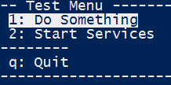
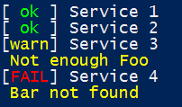
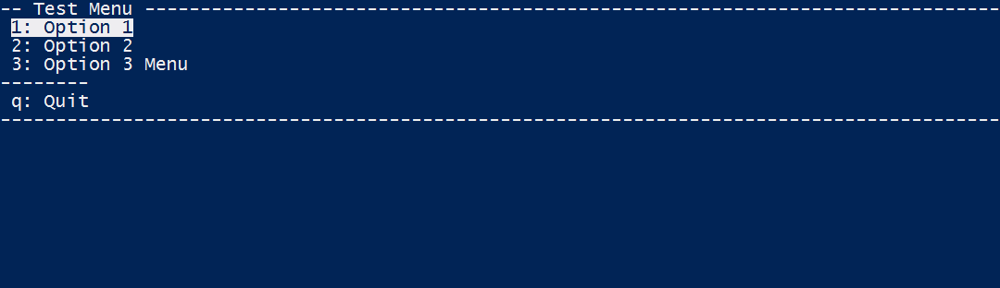

I am happy to announce the open sourcing of a project I have been using at work in one form or another for the last few years, SLMenu.
SLMenu is a set of functions intended to help make text user interfaces in powershell (v3 or above).
It can be used to create menus:

The menu can be used to return data (any Object) or execute a scriptblock on selection.
And can show status of things:

See the github repo for more detailed information.
Examples
